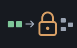
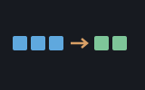

shaker scrambles a list of numbers so that it cannot be read
or edited by eye, and unscrambles it again given the same key. It also
appends a checksum, so if anyone changes the scrambled data you find out
rather than quietly decoding rubbish.
It is a four-round Feistel network — the classic construction for building a reversible scrambler out of an ordinary, non-reversible mixing function. Numbers go in and numbers come out: no strings, no bytes, no bitwise operators, which is just as well because Shoddy has none of the last.
Read this before you use it. This is an obfuscation layer, not a cryptosystem, and the distinction is not a formality. Four rounds is far too few, the key schedule is a bare rotation through your key list, the mixing function is cheap arithmetic rather than a studied design, and the checksum detects accidents rather than forgeries. Anyone who wants to read your data will read it. Use it to stop a save file being edited in Notepad — not to keep a secret.
In 1971, working at IBM, Horst Feistel published a way out of a problem that had bothered cipher designers for a long time. To scramble data reversibly you normally need every step to be reversible, which is a punishing constraint — your mixing function has to be a bijection, and you have to implement it twice, forwards and backwards, and any asymmetry between the two implementations is a bug that silently destroys data.
Feistel's construction sidesteps all of it. Split the data into two halves, L and R. Now do this: the new left half is simply R, and the new right half is L combined with F(R), where F is any function you like. To undo it you run the same trick in reverse — and because the half that F was applied to is carried through untouched, you can recompute F of it on the way back and subtract what you added. F never has to be reversible. It can be as messy and one-way as you can make it, which is precisely what you want from a mixing function, and you only ever write it once.
That idea went straight into Lucifer, IBM's cipher of the early 1970s, and from there into the Data Encryption Standard adopted by the US government in 1977 — sixteen Feistel rounds on 64-bit blocks, the most widely deployed cipher of its era. DES eventually fell to its 56-bit key rather than to any weakness in the structure, and the structure long outlived it: Blowfish, Twofish, RC5 and GOST are all Feistel networks. When AES was chosen in 2001 the winner happened to use a different construction, but Feistel's insight remains one of the neatest ideas in the field — a way of getting a reversible transformation for free out of an irreversible one.
What makes it a good fit here is that neatness. The whole reversible half of this machine is two functions of one line each, and they are visibly mirror images. Everything difficult is pushed into the mixing function, where being difficult is a virtue.
There is a large gap between "secret" and "not lying there in plain sight," and most programs only ever need the second. A high-score table that players shouldn't casually edit. A saved game you'd rather people finished than rewrote. A settings file where changing one number by hand would put the program into a state it was never tested in. A record you want to be able to prove hasn't been altered since you wrote it.
For all of those, what you want is exactly this: the data goes out
unreadable, comes back identical, and announces itself if it has been
meddled with. Reach for shaker when the cost of someone editing
a file is annoyance rather than harm. When the cost is actual harm, you need
a real cryptographic library and a real key-management story, and neither of
those is going to be four hundred lines of BASIC.
The shaker was the first machine in a shoddy mill. Before the rags could be pulled apart they had to be beaten, so they went into a rotating drum with slats or spikes in it and were tumbled until the dust, grit and loose dirt fell out through the grating. It did not change what the rags were. It rearranged them, shook out what should not be there, and handed the same material on to the next machine in the line.
Which is exactly the claim this machine makes, and exactly the claim it
does not. It is deliberately not called crypto: a name with
crypt in it promises secrecy, and the paragraph above is at pains to
withdraw that promise. A shaker is honest work on the way to somewhere else.
(The heritage of the name has the rest of the
mill.)
Values are field elements: whole numbers from 0 up to
ShakeModulus() - 1. Anything else — a fraction, a negative, a
number too large — is refused by name rather than quietly mangled. The key is
a list of field elements too, and it may be any length you like.
Include "shaker.shoddy"
Def Main()
Let key = { 4021, 55117, 903, 31337, 12289 }
Let sealed = ShakeEncrypt({ 11, 22, 33, 44 }, key)
Print(sealed) ' scrambled, plus a tag on the end
Print(ShakeDecrypt(sealed, key)) ' { 11, 22, 33, 44 }
' the total half, for data you did not write yourself
Print(ShakeVerify(sealed)) ' True
Print(ShakeDecryptOr(sealed, key, { })) ' the message, or { } if it was alteredText is not this machine's business, but it is one Map away —
each code unit is a number well inside the field:
Let codes = Map(Range(1, Len(s)), Fn(k) => Asc(Mid(s, k, 1)))
Let sealed = ShakeEncrypt(codes, key)
Let back = Fold(ShakeDecrypt(sealed, key), "", Fn(a, c) => a & Chr(c))A few things worth remembering:
ShakeDecrypt checks
it before doing anything else.ShakeDecrypt stops the program when the checksum doesn't match;
ShakeDecryptOr hands back your default. Same guard pairing as
Val/ValOr and JsonParse/JsonRead
— the strict one for data you wrote, the total one for data that arrived.You don't need any of this to use the machine — it's here for the curious.
The two rounds. The whole reversible core is this pair, and they are worth reading against one another:
Def ShakeRoundFwd(a, b, part) As Pair
Pair(b, ShakeWrap(a + ShakeMix(b, part)))
Def ShakeRoundBack(a, b, part) As Pair
Pair(ShakeWrap(b - ShakeMix(a, part)), a)The halves come back in the other order, and on the way back
ShakeMix is fed the half that survived the round rather
than the one that changed — that is the whole of Feistel's trick. Four rounds
make a block, and decryption spends the same four key values in the opposite
order.
Why the modulus is 67108859. This is the part that bit the first version of this machine, and it is worth stating plainly. Shoddy's only numeric type is the IEEE double, which represents integers exactly only up to 253. The mixing function squares its argument, so the modulus has to sit below 226 for that square to stay exact; 67108859 is the largest prime that does, and its square is 4.5×1015 against the limit of 9.0×1015.
Reaching for a 232-sized modulus, which is the natural instinct, overflows into a region where doubles have no fractional part left — and the original mixing function ended by taking a fractional part. So it returned 0. Every time. Which meant every round degenerated to a bare swap of the two halves, four swaps composed to the identity, and the machine returned its input unchanged while appearing to work perfectly: it round-tripped, it produced a checksum, and any key at all "decrypted" it. A round-trip test cannot catch that, which is why the test program insists that the ciphertext differ from the message and that the wrong key fail.
The odd value out. A message of odd length has one value with no partner to be Feistelled against. Passing it through untouched would leave a plaintext number sitting in the middle of the ciphertext, so it is shifted by a pad derived from the key and its position — deterministic, and its own inverse under subtraction.
The tag is Fletcher-style: a running sum and a running sum of those sums, both reduced into the field. Keeping the second sum is what lets it notice a value that has moved position, which a plain total would not.
What it costs. Everything is linear in the length of the
message, and everything that walks it — the two block loops, the checksum,
and the helper that strips the tag — is self-tail-recursive, so it compiles
to a loop and a long message costs no stack. Note that ShakeBody
exists rather than calling seq's Taken:
Taken builds its result on the way out of the recursion, one
stack frame per element, and overflows on a message of twenty thousand.
Sealing, opening, and checking
| Word | Description |
|---|---|
| ShakeEncrypt(xs, keys) | The scrambled message, with the
checksum appended — so the result is always one value longer than
xs. Stops the program if the key is empty or if any value, in
the message or the key, is not a whole number inside the field. |
| ShakeDecrypt(xs, keys) | The original message. Stops the program if the checksum doesn't match, so a caller who ignores the possibility cannot carry on with rubbish. |
| ShakeDecryptOr(xs, keys, dflt) | Total. Hands back
dflt if the checksum doesn't match, the key is empty, or the key
is out of the field. The one to use on data that arrived from somewhere you
don't control. |
| Word | Description |
|---|---|
| ShakeVerify(xs) | True or False: is the tag on the end still the one that belongs to the rest? False for anything too short to carry a tag. Remember it says nothing about whether your key is right. |
| ShakeChecksum(xs) | The tag on its own, for a list with no tag attached. Order-sensitive. |
| ShakeIsField(x) | Is x a whole number in
0 .. ShakeModulus() - 1? |
| ShakeAllField(xs) | Is every value? True for the empty list. |
| Word | Description |
|---|---|
| ShakeModulus() | 67108859, the largest prime below 226. Values run from 0 to one less than this. |
| ShakeRounds() | 4 — how many Feistel rounds make one block. |
| ShakeWrap(x) | x brought into the field. Floored,
so a negative comes back positive and subtraction is as safe as
addition. |
Exposed because the test program leans on them and because the machine is
meant to be read, not because a caller normally wants them:
ShakeMix (the mixing function), ShakeRoundFwd and
ShakeRoundBack (one Feistel round each way),
ShakeBlockEnc and ShakeBlockDec (four rounds),
ShakeKeyAt (the rotating key schedule), ShakePad
(the shift applied to an unpaired value), ShakeBody (everything
but the tag), and the loops ShakeEncList,
ShakeDecList, ShakeSumLoop and
ShakeTakeN.
No machine and no mill includes it yet — its words are already at the reckoner's prompt through its seed, and a mill that puts them to work will appear here.
| Machine | Why | |
|---|---|---|
 | seq | Pair
carries the two halves of a Feistel block, All checks every
value is in the field, and Last reads the tag. |